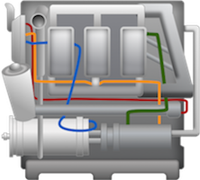
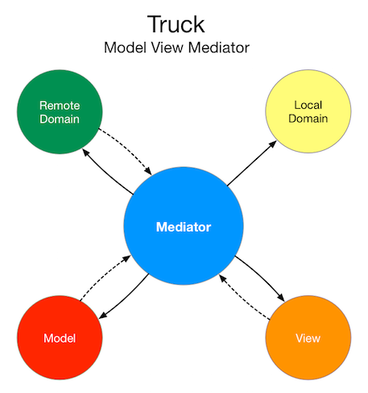

Docs
Everything You Need to Know
Mediators
Intro
Mediators are what binds the different parts of Truck together. Model, Views, remote domains and local data persistence do not know about each other. Only the mediators know about these. Truck's mediators handle the flow from one to the other. The following picture illustrates the role mediators play in Truck's architecture:

From this image you can see that the remove server can send a push notification to a mediator. A model can notify a mediator that it has changed. A view can notify a mediator about a user interaction. And a mediator can interact with the remote server, the model, the view and the local data layer.
Truck's Mediators are an evented bus system. Mediators can respond to events, or as they are called in Truck, handles. For example, when a model changes, it announces that change using a handle. If a mediator is listening for that handle, it can respond. This gets useful when the handle comes with data. The mediator can then take that data and do something with it.
You can also define a mediator that is executed like any other function. For example:
var fooMtor = $.Mediator('fooMtor');
fooMtor.init(function() {
console.log('This is fooMtor running1');
});
// Execute the mediator:
fooMtor.run();
Mediators have a number of builtin features that would require extra coding to do in an ordinary method. Besides running a mediator, you can stop it with stop(). This will prevent if from responding to any handles that might get published. You can also provide a number for the stop method, which tells the mediator to only run that many times and then stop.
// Stop the mediator immediately: fooMtor.stop(); // Stop the mediator after 5 runs: fooMtor.stop(5);
After some time, you might want to restart a stopped mediator. You do that with restart(). Using restart means the mediator will immediately start responding to its handle when it is published. You can also provide a number value representing seconds. This will tell the mediator to restart after that many seconds have passed.
// Restart the mediator immediately: fooMtor.restart(); // Restart the mediator after 5 minutes: fooMtor.restart(60 * 5);
By default, mediators keep track of how many times they have run. You can get that number with getCount(). This allows you to monitor the activity of mediators. You can reset a mediators count with resetCount(), or you can stop the count altogether with stopCount(). If for some reason you don't need a mediator and want to get rid of it, you can kill it literally with kill(). Killing is fatal for a mediator. After being killed, you cannot revive a mediator.
// Get the current number of times // the mediator has run: fooMtor.getCount(); // Rest the mediator's count to 0: fooMtor.resetCount(); // Stop the mediator from counting its runs: fooMtor.stopCount(); // Kill the mediator fooMtor.kill();